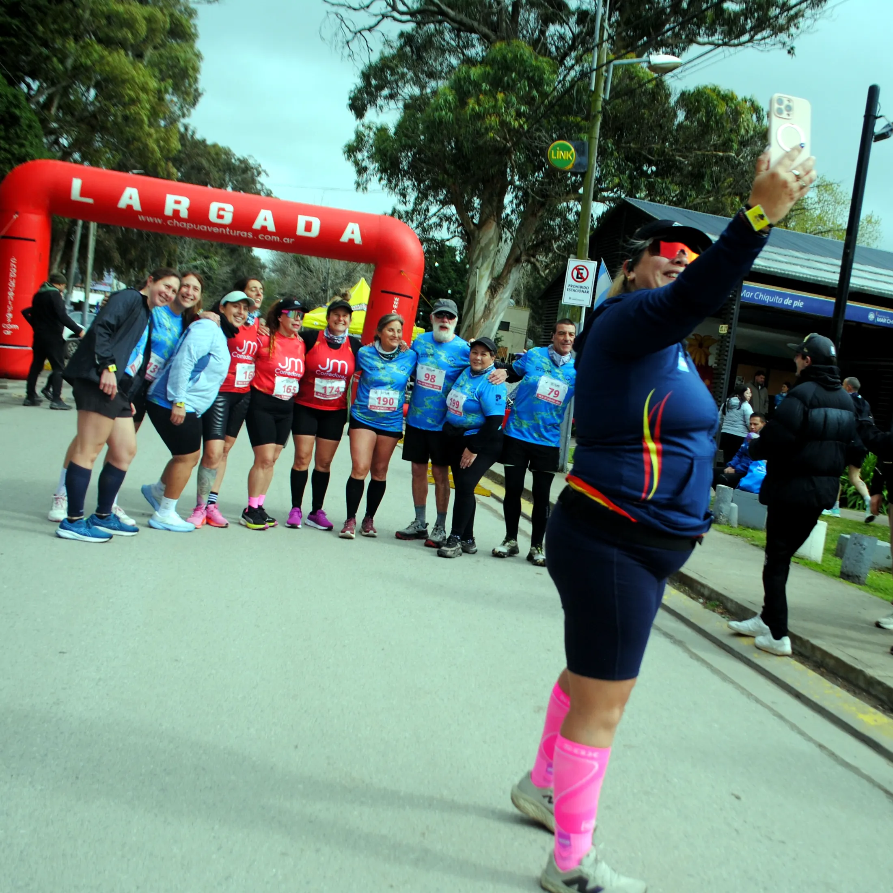
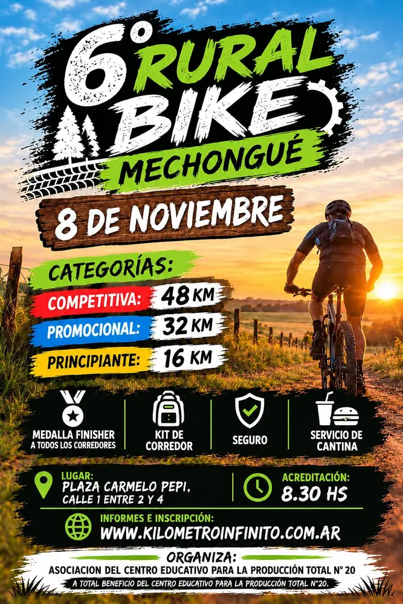
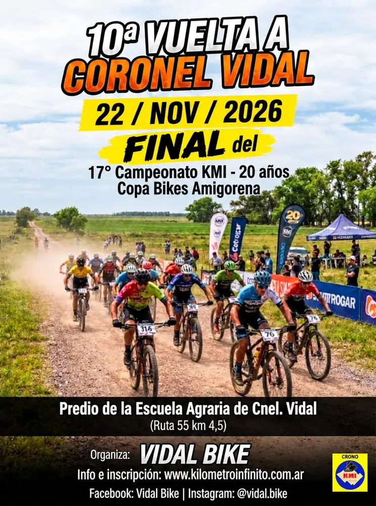
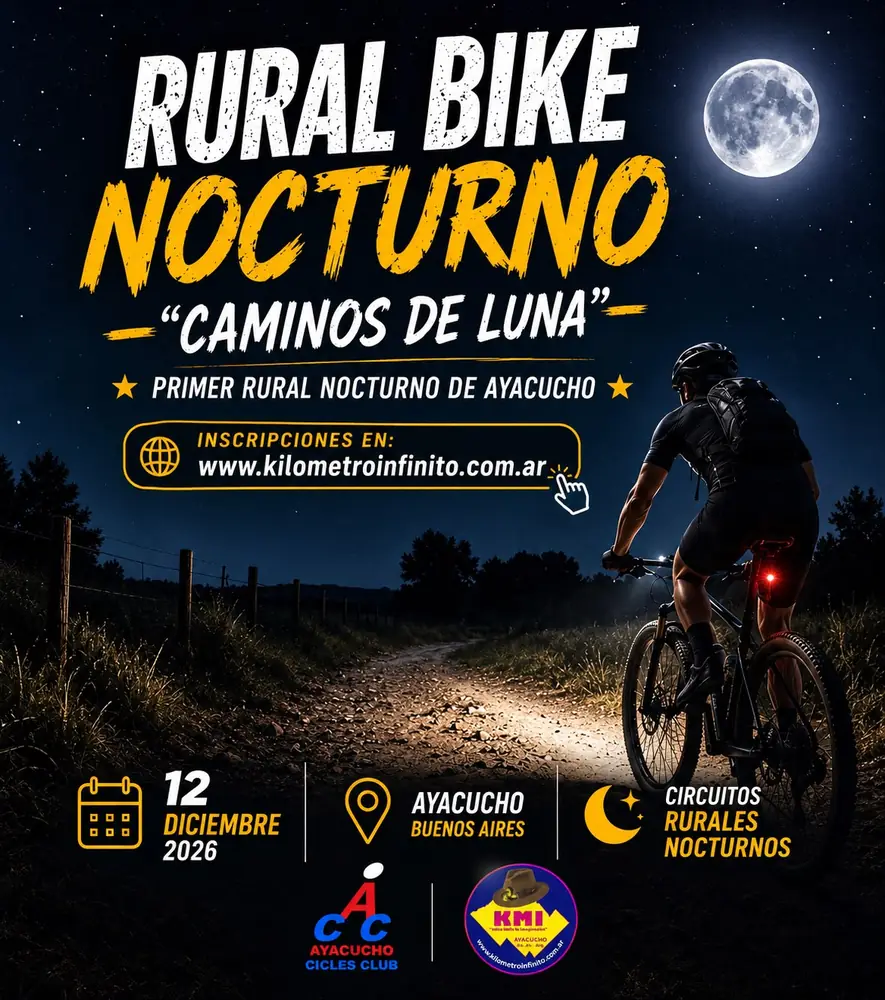

Calendario
Las carreras con el crono de KMI que vienen en lo que queda de 2026 y lo que ya hay confirmado de 2027.
-

-

10ª Vuelta a Coronel Vidal
Domingo 22 de noviembre · Coronel Vidal
Inscripción abierta hasta el 19 de noviembre o hasta completar el cupo
-

-

-

Suspendida: el Duatlón Rural de Coronel Vidal del 1° de noviembre, final del Campeonato Tres Pueblos.